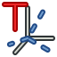
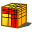
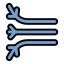

Il Modulo FEM offre a FreeCAD un moderno flusso di lavoro per l'analisi agli elementi finiti (FEA). Questo significa che tutti gli strumenti per fare una analisi degli elementi finiti sono combinati in una GUI.

I passi per eseguire una FEA nell'interfaccia grafica del modulo FEM di FreeCAD sono:
- Pre-elaborazione
- Modellare la geometria.
- Creare una Analisi:
- Creare una mesh FEM dal modello geometrico.
- Aggiungere i vincoli quali i carichi e i supporti al modello da analizzare.
- Aggiungere un materiale per il modello da analizzare
- Risoluzione
- Risolvere il sistema di equazioni all'interno della GUI di FreeCAD.
- Post-elaborazione
- Osservare i risultati nella GUI di FreeCAD.
Quanto sopra descrive principalmente come viene eseguita un'analisi FEA nel modulo FEM di FreeCAD. Per ulteriori informazioni consultare gli strumenti grafici descritti più avanti.
Dalla versione 0.15 di FreeCAD, il modulo FEM può essere usato su piattaforme Windows, Mac OSX e Linux. Dato che il modulo FEM utilizza del software esterno, la quantità di interventi manuali dipende dal sistema operativo che si sta utilizzando. Consultare la pagina Installare FEM.
Strumenti dell'interfaccia grafica
- Menu Modello:
-
 Contenitore analisi: Crea un nuovo contenitore per una analisi meccanica statica. Se invece, prima di cliccare su questo strumento, viene selezionato un solido nella vista ad albero si apre la finestra di meshing.
Contenitore analisi: Crea un nuovo contenitore per una analisi meccanica statica. Se invece, prima di cliccare su questo strumento, viene selezionato un solido nella vista ad albero si apre la finestra di meshing. -
 Materiale FEM per solidi: Consente di selezionare un materiale dal database.
Materiale FEM per solidi: Consente di selezionare un materiale dal database. -
 Materiale FEM per fluidi: Consente di selezionare un materiale dal database.
Materiale FEM per fluidi: Consente di selezionare un materiale dal database. -
 Materiale non lineare: Consente di selezionare un materiale dal database.
Materiale non lineare: Consente di selezionare un materiale dal database. -
 Sezione trasversale di trave:
Sezione trasversale di trave: - Rotazione di trave:
-
 Spessore di una lastra:
Spessore di una lastra: -
 Sezione del fluido per flusso 1D:
Sezione del fluido per flusso 1D: - Vincoli meccanici:
-
 Vincolo fissaggio: Serve per definire un vincolo di fissaggio su un punto, bordo o faccia (e).
Vincolo fissaggio: Serve per definire un vincolo di fissaggio su un punto, bordo o faccia (e). -
 Vincolo di dislocamento: Serve per definire un vincolo di dislocamento su un punto, bordo o faccia (e).
Vincolo di dislocamento: Serve per definire un vincolo di dislocamento su un punto, bordo o faccia (e). -
 Vincolo piano di rotazione: Serve per definire un vincolo piano di rotazione su una faccia piana.
Vincolo piano di rotazione: Serve per definire un vincolo piano di rotazione su una faccia piana. -
 Vincolo contatto: Serve per definire un vincolo contatto tra due facce.
Vincolo contatto: Serve per definire un vincolo contatto tra due facce. -  Trasforma vincolo:
-
 Vincolo forza: Usato per definire una forza in N applicata uniformemente ad una faccia selezionabile, nella direzione definibile.
Vincolo forza: Usato per definire una forza in N applicata uniformemente ad una faccia selezionabile, nella direzione definibile. -
 Vincolo pressione: Usato per definire un vincolo pressione.
Vincolo pressione: Usato per definire un vincolo pressione. -
 Vincolo peso proprio: Utilizzato per definire una accelerazione di gravità che agisce su un modello.
Vincolo peso proprio: Utilizzato per definire una accelerazione di gravità che agisce su un modello. - Vincolo cuscinetto: Per definire un vincolo cuscinetto.
-
 Vincolo ingranaggio: Per definire un vincolo ingranaggio.
Vincolo ingranaggio: Per definire un vincolo ingranaggio. -
 Vincolo puleggia: Per definire un vincolo puleggia.
Vincolo puleggia: Per definire un vincolo puleggia.
-
- Vincoli termici:
-
 Vincolo temperatura iniziale: Per definire un vincolo di temperatura iniziale di un corpo.
Vincolo temperatura iniziale: Per definire un vincolo di temperatura iniziale di un corpo. -
 Vincolo scambio termico: Per definire un vincolo di scambio termico su una faccia (e).
Vincolo scambio termico: Per definire un vincolo di scambio termico su una faccia (e). -
 Vincolo temperatura: Per definire un vincolo di temperatura limite su un punto, bordo o faccia (e).
Vincolo temperatura: Per definire un vincolo di temperatura limite su un punto, bordo o faccia (e). - Vincolo fonte di calore del corpo:
-
- Vincoli dei fluidi:
-
{kind=link}
{kind=link}
{kind=link}
{kind=link}
- Menu Mesh:
- Mesh FEM da forma con Netgen:
- Mesh FEM da forma con GMSH:
-  Strato limite di mesh FEM:
-
 Regione di mesh FEM:
Regione di mesh FEM: - Gruppo di mesh FEM:
-
 Imposta i nodi: Crea o definisce un set di nodi da mesh FEM.
Imposta i nodi: Crea o definisce un set di nodi da mesh FEM. - Converti mesh FEM in mesh: Converte la superficie di una mesh FEM in una mesh.
{kind=link}
{kind=link}
{kind=link}
{kind=link}
{kind=link}
- Menu Solutore:
-
 Solutore Calculix CCX tools: Crea un nuovo solutore per questa analisi. Nella maggior parte dei casi viene creato il risolutore unitamente all'analisi.
Solutore Calculix CCX tools: Crea un nuovo solutore per questa analisi. Nella maggior parte dei casi viene creato il risolutore unitamente all'analisi. - Solutore CalculiX:
- Solutore Elmer:
- Solutore Z88:
-
 Equation heat:
Equation heat: -
 Equation elasticity:
Equation elasticity: -
 Equation electrostatic:
Equation electrostatic: -
 Equation fluxsolver:
Equation fluxsolver: -  Equation flow:
-
 Controlli del solutore: Apre il menu per regolare e avviare il risolutore selezionato.
Controlli del solutore: Apre il menu per regolare e avviare il risolutore selezionato. -
 Avvia il solutore: Avvia il risolutore selezionato per l'analisi attiva.
Avvia il solutore: Avvia il risolutore selezionato per l'analisi attiva.
-
{kind=link}
{kind=link}
- Menu Risultati:
-
 Azzera risultati: Cancella i risultati dell'analisi attiva.
Azzera risultati: Cancella i risultati dell'analisi attiva. -
 Mostra i risultati: Visualizza i risultati di un'analisi.
Mostra i risultati: Visualizza i risultati di un'analisi. - icon Post Applica le modifiche:
-
 Post Pipeline dal risultato:
Post Pipeline dal risultato: -
 Post Crea clip filter:
Post Crea clip filter: -
 Post Crea scalar clip filter:
Post Crea scalar clip filter: -
 Post Crea cut filter:
Post Crea cut filter: -
 Post Crea filtro vettoriale warp:
Post Crea filtro vettoriale warp: -
 Post Crea data along line filter:
Post Crea data along line filter: -
 Post Crea linearized stresses:
Post Crea linearized stresses: - icon [[Image:|32px]] Post Crea data at point filter:
-
 Post Crea funzioni:
Post Crea funzioni:
-
{kind=link}
- Menu contestuale:
{kind=link}
- Menu preferenze
-
 Preferenze...: Preferenze disponibili per gli strumenti FEM.
Preferenze...: Preferenze disponibili per gli strumenti FEM.
-
Tutorial
Tutorial 1 FEM CalculiX Cantilever 3D
Tutorial 2 Tutorial di FEM
Tutorial 3 FEM Tutorial Python
Tutorial 4 FEM Shear of a Composite Block
Tutorial di analisi meccaniche termiche in PDF
Video Tutorial 1 Post sul forum con il link a YouTube
Video Tutorial 2 Post sul forum con il link a YouTube
Futuro video Tutorials Post sul forum con il link a YouTube
Link
Installare FEM Per una descrizione dettagliata di come impostare un modulo FEM funzionante.
Mesh FEM Per ulteriori informazioni su Mesh FEM in FreeCAD
FEM CalculiX Per ulteriori informazioni sull'interfaccia tra il modulo FEM e il solutore corrente Calculix
Progetto FEM per informazioni più dettagliate circa le Unità, i Limiti e lo Sviluppo del modulo FEM.